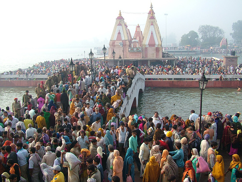

Welcome to indai
KAZANAI | Indai internetu, elektroninė parduotuvė
2020.10.27 11:08Registruotis Prisijungimas Prisijungimas Palyginti prekes (0) Prekių krepšelis Krepšelis tuščias. Viso prekių už 0 00 € Peržiūrėti krepšelį Iki nemokamo pristatymo liko 1000 00 € Pristatysime nemokamai!
+37063713444 Susisiekime
KEPTUVĖS Ketaus keptuvės Emaliuotos ketaus keptuvės PUODAI Ketaus puodai Emaliuoti ketaus puodai KAZANAI Ketaus kazanai TROŠKINTUVAI Ketaus troškintuvai Priedai Stikliniai dangčiai Perforuotas samčiai Ketaus dangčiai Trikojai, Stovai Krosnelės kazanam Apmokėjimas ir pristatymas Kontaktai Kaip prižiūrėti ketaus indus KEPTUVĖS Ketaus keptuvės Emaliuotos ketaus keptuvės PUODAI Ketaus puodai Emaliuoti ketaus puodai KAZANAI Ketaus kazanai TROŠKINTUVAI Ketaus troškintuvai Priedai Stikliniai dangčiai Perforuotas samčiai Ketaus dangčiai Trikojai, Stovai Krosnelės kazanam Apmokėjimas ir pristatymas Kontaktai Kaip prižiūrėti ketaus indus Pradžia / KAZANAIKAZANAI
Ketaus kazanaiPrekių filtras
Valyti Tūris Valyti 4 L 6 L 8 L 12 L 22 L 17 L 30 L 10 L 15L 18L Skersmuo (cm): Valyti 26 cm 28 cm 30 cm 36 cm 40 cm 50 cm 58 cm 34 52 45 32Gamintojai
Biol BrizollKAZANAI
Ketaus indai – pasižymi ilgaamžiškumu, įkaitintas ketus puikiai paskirsto šilumą, atlaiko aukštą temperatūrą, todėl puikiai tinka intensyviai naudoti. Dėl specifinės ketaus struktūros įkaitintas indas ilgai palaiko šilumą, todėl šie indai puikiai tinka kepti bei troškinti. Ketaus keptuvė – geriausias pasiūlymas tiems, kurie mėgsta gaminti ant ypač karšto paviršiaus. Šie indai puikiai tinka visų tipų viryklėms.
1 - 32 iš 37 Ketaus kazanas su dangčiu Brizoll 6l Skersmuo (cm): 26 cm
Tūris 6 L
34 99 € Į palyginimą Iš palyginimo Palyginti (0) Ketaus kazanas su dangčiu Brizoll 8l Skersmuo (cm): 28 cm
Tūris 8 L
42 99 € Į palyginimą Iš palyginimo Palyginti (0) Ketaus kazanas su dangčiu - keptuve Brizoll 8l Skersmuo (cm): 28 cm
Tūris 8 L
Papildoma informacija Su dangčiu keptuve
47 99 € Į palyginimą Iš palyginimo Palyginti (0) Totoriškas ketaus kazanas su dangčiu - keptuve Brizoll 4l Skersmuo (cm): 28 cm
Tūris 4 L
39 99 € Į palyginimą Iš palyginimo Palyginti (0) Totoriškas ketaus kazanas su dangčiu Brizoll 4l 34 99 € Į palyginimą Iš palyginimo Palyginti (0) Totoriškas ketaus kazanas su dangčiu Brizoll 8l 46 99 € Į palyginimą Iš palyginimo Palyginti (0) Totoriškas ketaus kazanas su dangčiu Brizoll 12l Skersmuo (cm): 40 cm
67 99 € Į palyginimą Iš palyginimo Palyginti (0) -20 % Ketaus kazanas su dangčiu Biol 6l Skersmuo (cm): 26 cm
Tūris 6 L
32 99 € 41 00 € Sutaupykite 8 01 € Į palyginimą Iš palyginimo Palyginti (0) -26 % Ketaus kazanas su dangčiu Biol 8l Skersmuo (cm): 28 cm
Tūris 8 L
39 99 € 54 00 € Sutaupykite 14 01 € Į palyginimą Iš palyginimo Palyginti (0) Ketaus kazanas su dangčiu Biol 10l 46 99 € Į palyginimą Iš palyginimo Palyginti (0) Ketaus kazanas su dangčiu Biol 12l Skersmuo (cm): 32
53 99 € Į palyginimą Iš palyginimo Palyginti (0) Ketaus kazanas su dangčiu Biol 15l 59 99 € Į palyginimą Iš palyginimo Palyginti (0) -34 % Totoriškas ketaus kazanas su dangčiu Biol 8l Skersmuo (cm): 36 cm
Pagaminta iš Ketaus
Tūris 8 L
Papildoma informacija Su ketaus dangčiu
42 99 € 65 00 € Sutaupykite 22 01 € Į palyginimą Iš palyginimo Palyginti (0) -25 % Totoriškas ketaus kazanas su dangčiu Biol 12l Skersmuo (cm): 40 cm
Tūris 12 L
Papildoma informacija Su ketaus dangčiu
55 99 € 75 00 € Sutaupykite 19 01 € Į palyginimą Iš palyginimo Palyginti (0) -32 % Totoriškas ketaus kazanas su dangčiu Biol 15l Skersmuo (cm): 45
Tūris 15L
65 99 € 97 00 € Sutaupykite 31 01 € Į palyginimą Iš palyginimo Palyginti (0) -32 % Totoriškas ketaus kazanas su dangčiu Biol 18l Skersmuo (cm): 50 cm
Tūris 18L
72 99 € 107 00 € Sutaupykite 34 01 € Į palyginimą Iš palyginimo Palyginti (0) -18 % Totoriškas ketaus kazanas su dangčiu Biol 22l Skersmuo (cm): 50 cm
Tūris 22 L
Papildoma informacija Su ketaus dangčiu
89 99 € 110 00 € Sutaupykite 20 01 € Į palyginimą Iš palyginimo Palyginti (0) -17 % Totoriškas ketaus kazanas su dangčiu Biol 32l Skersmuo (cm): 58 cm
115 99 € 140 00 € Sutaupykite 24 01 € Į palyginimą Iš palyginimo Palyginti (0) Ketaus kazanas su dangčiu 6l Tūris 6 L
55 99 € Į palyginimą Iš palyginimo Palyginti (0) Ketaus kazanas su dangčiu 12l Skersmuo (cm): 40 cm
Tūris 12 L
85 99 € Į palyginimą Iš palyginimo Palyginti (0) Ketaus kazanas su dangčiu 17l Skersmuo (cm): 45
Tūris 17 L
124 99 € Į palyginimą Iš palyginimo Palyginti (0) Ketaus kazanas su dangčiu 22l Skersmuo (cm): 50 cm
Tūris 22 L
140 99 € Į palyginimą Iš palyginimo Palyginti (0) Ketaus kazanas su dangčiu - keptuve 6l Skersmuo (cm): 30 cm
Tūris 6 L
Papildoma informacija Su dangčiu keptuve
59 99 € Į palyginimą Iš palyginimo Palyginti (0) Ketaus kazanas su dangčiu - keptuve 8l Skersmuo (cm): 34
Tūris 8 L
Papildoma informacija Su dangčiu keptuve
79 99 € Į palyginimą Iš palyginimo Palyginti (0) Ketaus kazanas su dangčiu - keptuve 12l Skersmuo (cm): 40 cm
Tūris 12 L
Papildoma informacija Su dangčiu keptuve
97 99 € Į palyginimą Iš palyginimo Palyginti (0) Ketaus kazanas su dangčiu - keptuve 17l Skersmuo (cm): 45
Tūris 17 L
Papildoma informacija Su dangčiu keptuve
129 99 € Į palyginimą Iš palyginimo Palyginti (0) Emaliuotas Ketaus kazanas su dangčiu 22l Komentarai ( 1 ) Tūris 22 L
178 99 € Į palyginimą Iš palyginimo Palyginti (0) Emaliuotas Ketaus kazanas su dangčiu 30l Skersmuo (cm): 52
Tūris 30 L
250 99 € Į palyginimą Iš palyginimo Palyginti (0) Emaliuotas Ketaus kazanas su dangčiu - keptuve 6l Skersmuo (cm): 30 cm
Tūris 6 L
Papildoma informacija Su dangčiu keptuve
75 99 € Į palyginimą Iš palyginimo Palyginti (0) Emaliuotas Ketaus kazanas su dangčiu - keptuve 8l Skersmuo (cm): 34
Tūris 8 L
Papildoma informacija Su dangčiu keptuve
105 99 € Į palyginimą Iš palyginimo Palyginti (0) Emaliuotas Ketaus kazanas su dangčiu - keptuve 12l 128 99 € Į palyginimą Iš palyginimo Palyginti (0) Emaliuotas Ketaus kazanas su dangčiu - keptuve 17l 179 99 € Į palyginimą Iš palyginimo Palyginti (0) 1 2 Aktualijos Populiariausios prekės Akcijos Naujos prekės Pirkimo taisyklės Grąžinimo sąlygos Indai internetu, elektroninė parduotuvė UAB "Ukrainos ir Lietuvos prekybos rūmai". Kodas: 303914445. PVM mokėtojo kodas: LT100012674313. Fizikų g. 16-33, LT-08448, Vilnius. Telefonas: +37065206641. Sąskaitos nr.: LT21 7300 0101 4274 6818, AB Swedbank. Banko kodas: 73000, SWIFT: HABALT22. © 2020 UAB "Ukrainos ir Lietuvos prekybos rūmai". Be UAB "Ukrainos ir Lietuvos prekybos rūmai" sutikimo draudžiama kopijuoti ir platinti svetainėje esančią informaciją. Elektroninių parduotuvių nuoma verskis.lt Į viršų
